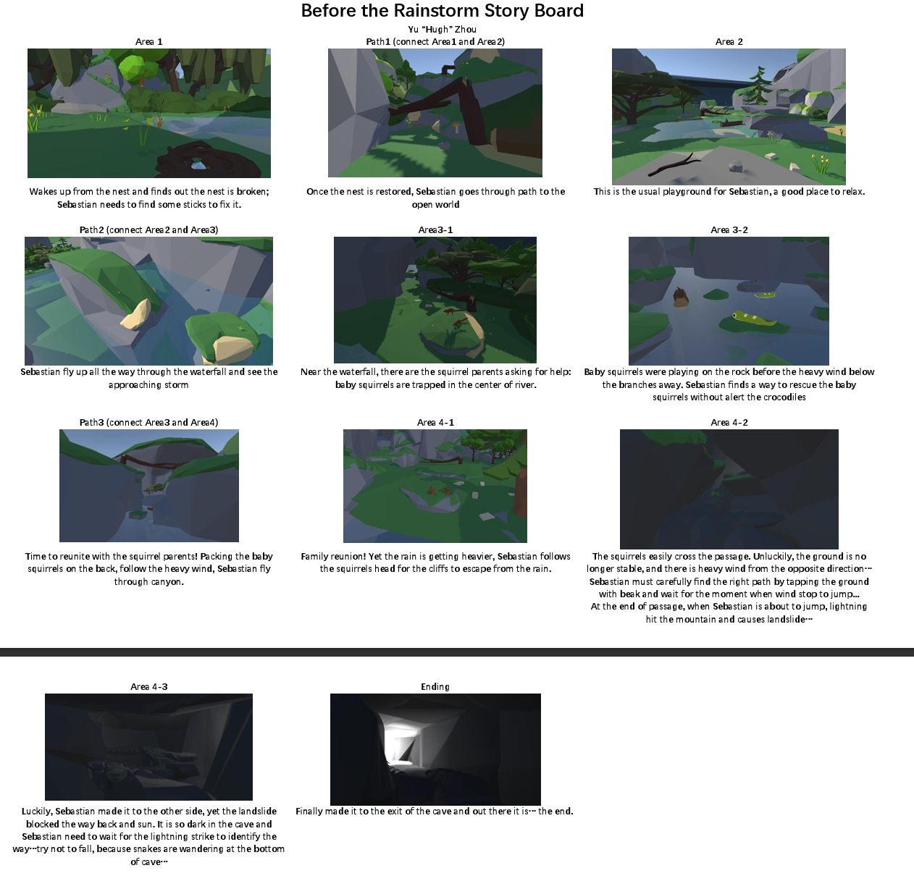
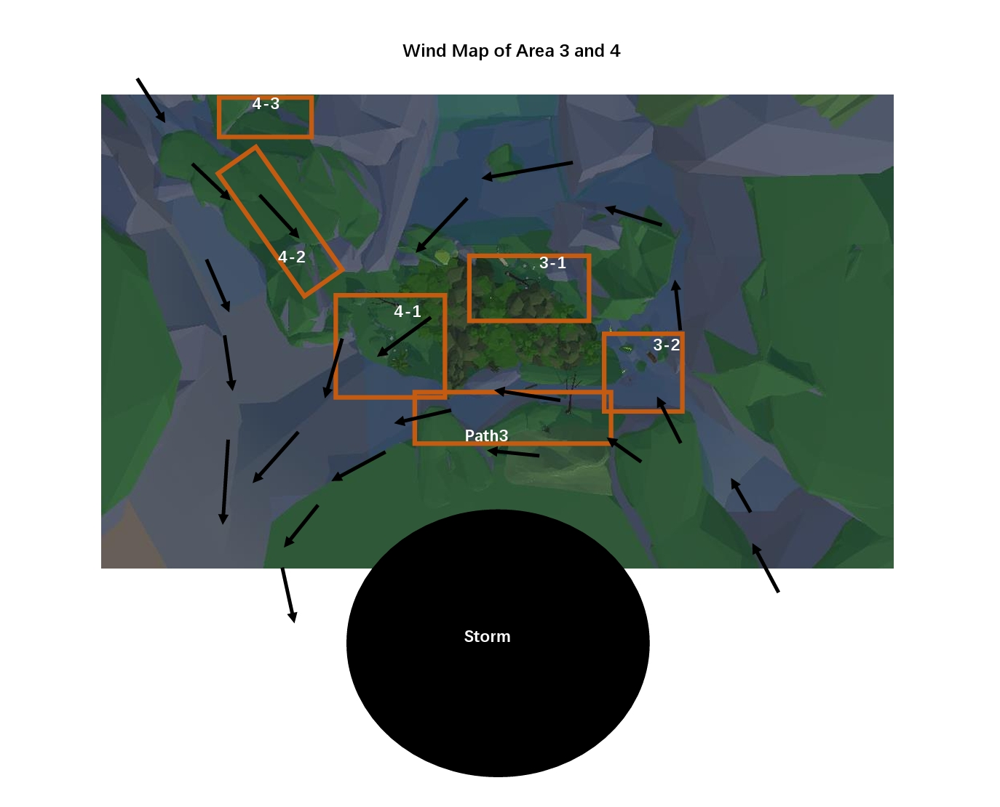

Overview
Early Version Trailer : Before the Hurricane
Experience Goal
Taking on the adventure as Sebastian the Bird, players will have a rush of excitement and wonder as they engage with their surroundings, tapping into the unique experience of using their beak and flying in the skies. However, as the Rainstorm approaches, players must remain vigilance, ensuring the protection of fellow animals from lurking predators. In the face of potential danger, players must also confront their own fears of becoming prey, and maintain courage in the challenges that lie ahead.
Key Features : Beak & Fly


While hands are "tied", players will be able to interact with the world with their "long beak" and fly around flapping their "wings".
Ideation
Game Design Macro

Click to Download Table of Game Design Macro
Above is the screenshot of Table Game Design Macro. In case the text contents are not clear, feel free to download the file.
Storyboard
Click to Download The Storyboard
Wind Map
Above is the screenshot of Storyboard and Wind Map. The Wind Map may help you understand the geographical information of Area 3 and Area 4
Gameplay
NOTICE
Due to ongoing technical issues, the following videos and images are separately recorded and took in engine and do not represent final quality. These videos and images are part of a stage progress report, if you are interested in this project and looking forward to updates, here is the FUTURE PLAN and feel free t reach out to me via EMAIL.
Area 1, Path1 and Area2
Waking up from the nest and finding out the nest is broken, Sebastian needs to find some sticks to fix it. Once the nest is restored, Sebastian goes through path to the open world This is the usual playground for Sebastian, a good place to relax.
Path2 (connect Area2 and Area3)
Sebastian fly up all the way through the waterfall and see the approaching storm
Area3-1
Near the waterfall, there are the squirrel parents asking for help: baby squirrels are trapped in the center of river.
Area3-2


Baby squirrels were playing on the rock before the heavy wind below the branches away. Sebastian finds a way to rescue the baby squirrels without alert the crocodiles
Path3 (connect Area3 and Area4)
Time to reunite with the squirrel parents! Packing the baby squirrels on the back, follow the heavy wind, Sebastian fly through canyon.
Area 4-1
Family reunion! Yet the rain is getting heavier, Sebastian follows the squirrels head for the cliffs to escape from the rain.
Area 4-2
The squirrels easily cross the passage. Unluckily, the ground is no longer stable, and there is heavy wind from the opposite direction… Sebastian must carefully find the right path by tapping the ground with beak and wait for the moment when wind stop to jump... At the end of passage, when Sebastian is about to jump, lightning hit the mountain and causes landslide…
Area 4-3
Luckily, Sebastian made it to the other side, yet the landslide blocked the way back and sun. It is so dark in the cave and Sebastian need to wait for the lightning strike to identify the way…try not to fall, because snakes are wandering at the bottom of cave…
ENDING
Finally made it to the exit of the cave. As the light become brighter, this demo comes to an end.
Next Step

Over the next few months, we will continue to polish and improve the game to ensure that it is a immersive and playful experience for everyone.
| Yu Zhou | yxz1655@miami.edu | uyuohz0606@gmail.com |
|---|